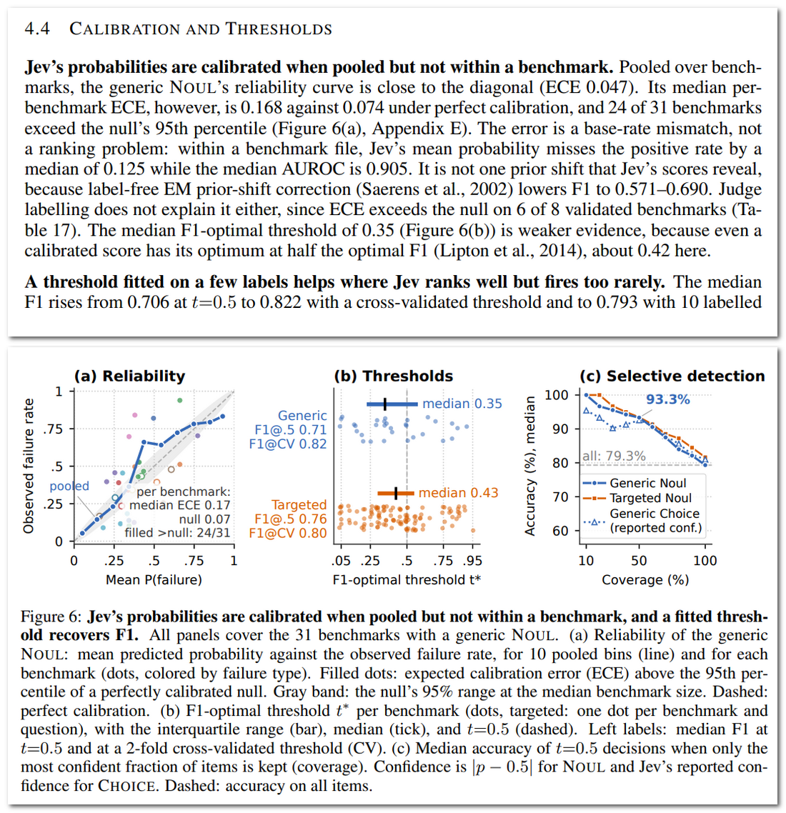
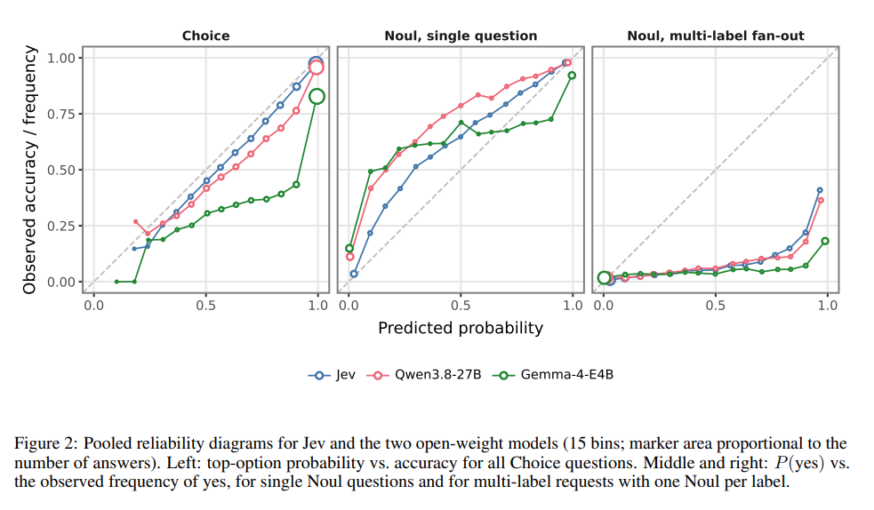
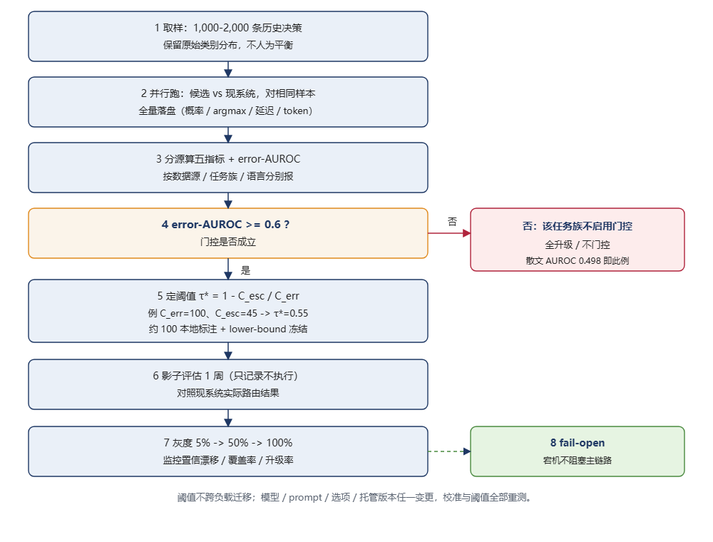

决策模型的生产落地是一个涉及评估规范、阈值校准、成本权衡与风险控制的系统工程。现有公开基准与厂商宣传数据往往存在统计不规范、分布错配等问题，难以直接作为生产部署的依据。本章基于 28 项早期研究的审计结论与多项落地实践，系统构建了决策模型从评估验证到上线运行的完整方法论框架，明确了阈值设定的成本 - 收益逻辑、不同部署方案的适用场景，并厘清了决策模型与约束解码、传统分类器等五类相似技术范式的边界与转换成本。
12.1、标准化评估体系与实证规范
厂商公布的性能指标仅可作为参考，不能直接作为生产决策依据。对 27 篇早期类型化决策模型（Typed Decision Model, TDM）论文【截止10月9日】的审计显示，12 篇未报告置信区间与显著性检验，至少 7 篇存在观测结果后修改实验设计的 p-hacking 行为，导致性能指标存在显著膨胀。因此，建立严谨的本地化评估流程是落地的首要前提。
12.1.1、多维度评估指标体系
决策模型输出包含离散选择与概率分布两类信息，单一指标无法全面刻画其性能，需从准确性（多准）、校准度（概率多可信）、错误识别能力（是不是知道自己不知道）三个维度构建评估体系。五个核心指标的定义、作用与局限如表所示。
决策模型核心评估指标对比表如下：
| 指标 | 计算方式 | 核心问题 | 主要局限 |
|---|---|---|---|
| 准确率 /macro-F1 | 正确决策占比； 类别不均衡时采用 macro-F1 |
模型判别精度 | 与校准完全无关； 聚合准确率会掩盖子群性能崩塌 |
| ECE | 置信度分 M 个等宽桶，计算桶内准确率与置信度的加权平均差\(\mathrm{ECE}=\sum_m \frac{\vert B_m\vert }{n}\lvert\mathrm{acc}(B_m)-\mathrm{conf}(B_m)\rvert)\) | 置信度数值的可信度 |
对分桶数敏感； 样本量 < 1000 时波动剧烈，需同时报告桶数与置信区间 |
| Brier / 多类 Brier | 预测概率与真实标签的均方误差\(\frac1n\sum_i\lVert q_i-y_i\rVert^2)\)，NLL 为其对数变体 | 整体概率分布质量 | NLL 对低概率正确事件无界，单一样本可主导结果 |
| 错误检测 AUROC | 以决策正误为标签、置信度（或\(1-q\)）为分数计算排序性能 | 模型是否知晓自身错误（级联可行性前提） | 不要求概率数值校准； 跨任务不可直接比较； |
| 风险 - 覆盖率 / AURC | 按置信度从高到低累积执行，绘制覆盖率 - 错误率曲线并计算线下面积 | 级联阈值下错误率与自动化率的完整权衡 | 对分布漂移高度敏感，需按数据切分分别绘制 |
注意，指标选择需匹配下游应用场景：
若仅取最大概率选项自动执行，应重点关注准确率 / F1 值与错误检测 AUROC，后者直接决定置信度门控机制是否可行；
若将概率用于成本敏感决策或分桶监控，则需补充 ECE 与 Brier 分数；
若用于级联阈值设定，需绘制风险 - 覆盖率曲线并报告 AURC。
单一指标的性能表现不能推广至其他维度，例如 Rewarding Doubt 模型【2503.02623，Table 4】在 CommonsenseQA 任务上 ECE 与零样本基线接近（0.282 vs 0.293），但错误检测 AUROC 从 0.54 提升至 0.64，仅用 ECE 会遗漏排序能力的改善。
另外，需要注意存在三项关键实证发现构成评估的硬约束需要明确：
第一，聚合 ECE 存在严重误导性
Jev-1.13.0 在 22 个 Choice 数据集上的聚合 ECE 为 0.028，单数据集中位数也为 0.028，但未加权平均 ECE 达 0.061，且 20 个数据集存在普遍的过度自信现象【2609.37647，§4.3】。
更极端的案例显示，通用 NOUL 任务上聚合 ECE 仅 0.047，而单基准中位数 ECE 高达 0.168，基线率错配被聚合平均所掩盖【arXiv:2609.29429 §4.4】。

因为，实际实践当中评估必须按数据源分桶报告，禁止使用单一聚合分数。
第二，仅测试 top-lable 置信校准存在不足
Sys1Cal-v1 基于 365 条已知精确概率的样例测试发现，同一模型在不同输出原语下的概率语义存在显著差异：Jev-Noul 的分布重叠度（OVL）为 0.918，Jev-Score 为 0.886，而 Jev-Choice 仅为 0.764【2609.35342，Table 1】；同一模型、同一问题、换原语，概率语义就不互通。
因此若下游需直接消费概率数值，必须针对所用原语单独校准，而非仅验证 top-1 置信度。
第三，错误检测 AUROC 并非普遍有效
在可读出类任务上，Jev 的错误检测 AUROC 可达 0.73–0.88，但在无参考的自由文本评估任务（“对错分离”任务上）上仅为 0.498，接近随机水平，此时置信度门控完全失效【Jev-as-a-Judge，arXiv:2609.26550】。
因此，实践中在上线前必须在目标任务上验证 AUROC 有效性，不能默认置信度具备错误区分能力，它决定"置信度门控"这件事是否成立。
12.1.2、影子评估流程
本地化评估应采用影子模式运行，即模型仅输出预测结果、不介入实际业务流程，以暴露校准误差与鲁棒性问题。标准化流程包括以下环节：
样本抽取：从生产日志中抽取 1000–2000 条带真实标签的历史样本，保留原始类别分布与文本特征，禁止人为平衡类别，避免引入先验错配。无标签生产样本仅可用于覆盖率、延迟与置信度分布监控，不足以支撑准确率与校准结论。
并行测试：候选模型与现有系统在完全相同的样本上并行运行，全量记录概率输出、决策结果、端到端延迟与调用成本。
输出需通过格式校验（ Schema 校验），包括概率归一性、决策与 argmax 一致性等，无效输出计入准确率误差，概率指标仅在有效输出上条件计算【2609.26550】。
延迟需通过固定测试面板（timing panel）独立测量（judge 120 次、含网络与重试），避免并发与冷启动污染。
参考：2609.37647 与 github.com/AppliedMachineLearning-Lab/jev-benchmarking
- 分源统计：按数据源、任务族、语言维度分别计算全部指标，并报告 95% 置信区间（CI）。
- 区间做法：配对差异采用按来源聚类的 bootstrap 重采样（2000 次），分桶指标采用百分位 bootstrap（500 次）【arXiv:2609.26550 / 2609.37647】。
- 可视化验证：绘制可靠性图与风险 - 覆盖率曲线。
- 可靠性图（置信度 vs 实际频率）用于判断系统性过度 / 欠自信偏差，Jev-1.13.0 在 Choice 任务上 20/22 数据集表现为过度自信（落在对角线下方），而 Noul 原语则略欠自信，即同一模型不同原语偏自信方向相反，这提示我们对不同原语需要采用不同的校准策略【跨接口一致性，arXiv:2609.37647，4.3】。

- 风险 - 覆盖率曲线【曲线越靠左下（同等覆盖率下错误率越低）越好】用于直观呈现阈值与自动化率、错误率的权衡关系【arXiv:2609.37647】。
此外，必须补充两项低成本对抗性测试，以验证鲁棒性：
选项顺序与措辞不变性测试：对同一决策生成多种选项排列与等价措辞改写，统计 argmax 翻转率。
反诈场景【2609.23959】实测显示，选项顺序翻转率为 2.6%（95% CI [0.2%, 5.8%]），问题措辞翻转率为 5.2%（95% CI [2.0%, 9.4%]），且翻转存在方向性偏向，30 例翻转中有 28 例倒向 “合法” 类别。
我们的综述审计显示 27 篇论文中仅 1 篇论文【arXiv:2609.32160，Table 6】完成了该项测试。
同基座 logprob 对照测试：直接读取冻结基座模型的选项 token logits 作为基线，验证决策接口本身的增量价值。
在目前审计范围内，5 项独立研究一致表明，类型化接口本身不带来独立精度收益，性能主要由基座模型与训练数据决定，精度由 backbone 与训练数据主导【arXiv:2609.32160，Finding F1】。
该结论可指导研发投入时的分配方向。
12.1.3、统计纪律与预注册规范
为避免结果导向的实验设计偏差，评估过程必须遵循严格的统计纪律：
- 预注册成功标准：在查看任何结果前需明确非劣效边界与终止条件。
- 例如反诈场景【2609.23959】预先设定 “AUROC 与人工裁判差距在 0.02 以内且延迟降低 20 倍” 的标准，并如实披露测试集筛选导致的 winner's curse 偏差。
- 三层数据切分：严格划分开发集（选择检查点）、校准集（拟合温度与阈值）、测试集（最终验证），测试集在最终评估前不得触碰。
- AgentJev 实践中，1200 条样本划分为 120 条开发集、120 条校准集与 960 条测试集，所有随机种子与数据版本预先固定【github.com/malevrigns/agent-jev】。
- 样本量约束与结论强度：ECE 等校准指标在样本量小于 1000 时噪声极大，小于 2 个百分点的差异不具备统计显著性。
- 阈值选择方面，点估计规则在任意样本量下均有 40%–50% 的概率出现 2 分以上的性能下降，而采用下界置信区间（lower-confidence-bound）规则时，约 96 条本地标注即可将该概率降至 5% 左右【arXiv:2609.26550，§8】。
- 变更重测要求：校准是模型、数据分布、提示词（包括选项措辞）与版本的联合属性，上述任一要素变更后必须重新校准。
- 例如 Laya 实现中将温度参数钳制在 [0.5, 5.0] 区间，并对超限桶发出运行时告警，避免极端锐化导致的校准失效【github.com/mizorewww/laya-mlx】。
标准化预注册模板应包含成功标准、数据切分、指标设置、阈值规则、对抗测试、终止条件六项要素，可有效规避审计发现的事后修改设计问题。对 27 篇早期论文的审计统计显示，各项评估规范的合规率普遍偏低（表 13-2），合规率越低的项目越具备差异化价值，应作为评估的必选项。
预注册模板示例：
1. 成功标准：例"候选模型在目标负载上 AUROC ≥ 0.80，且 ECE 95% CI 上界 ≤ 0.10"（非劣效 margin 必须在看到任何结果前写下；反诈的 .02 margin 即先例）
2. 数据切分：dev / calibration / test 三层的样本量与冻结方式；test 在开封前不得触碰
3. 指标与分桶：ECE 桶数（M=10 或 15）、bootstrap 重采样次数（≥500）、配对差聚类单位
4. 阈值规则：成本矩阵 (C_err, C_esc) 数值化；lower-bound 规则的容差（例 −0.02）
5. 对抗性测试：选项排列数、等价措辞改写数、注入测试样本数
6. 终止条件：什么结果下放弃该路线（例 error-AUROC<0.6 即不启用门控）如下表为早期 TDM 论文的评估规范合规率【参照2609.32160 Table 6】：
| 评估规范 | 合规率 | 实践建议 |
|---|---|---|
| 同基座 label-logprob 基线对照 | 5/26 | 必做 |
| 廉价生成级联基线对照 | 1/5 | 级联项目必做 |
| 重排 / 改写的逐决策一致性测试 | 17/26 | 执行选项排列与改写测试 |
| 选项名不变性测试 | 1/27 | 必做，最易被遗漏 |
| 核心结果附带置信区间 / 显著性检验 | 15/27 | bootstrap 置信区间必备 |
| 校准度量（ECE/Brier） | 13/17 | 必做 |
| 阈值与评测集分离冻结 | 7/7 | 适用场景严格执行 |
| 延迟报告缓存前后对比 | 3/20 | 自托管项目报告两组数据 |
12.2、阈值决策与成本 - 收益建模
12.2.1、基于成本矩阵的盈亏平衡阈值
置信度阈值本质上是业务成本属性，而非模型固有属性。阈值设定的核心是在自动执行错误成本与升级复核成本之间寻找盈亏平衡点。
定义：设自动执行正确的相对收益为 0，自动执行错误的代价为\(C_\mathrm{err}\)，升级至高级模型或人工审核的代价为\(C_\mathrm{esc}\)。则对于置信度为q的决策：
自动执行的期望代价：\((1-q)C_\mathrm{err}\)
升级复核的期望代价：\(C_\mathrm{esc}\)
令两者相等，可得盈亏平衡阈值： \(\tau^* = 1 - \frac{C_\mathrm{esc}}{C_\mathrm{err}}\)，这样只有\(q \gt 1 - \frac{C_\mathrm{esc}}{C_\mathrm{err}}\)时才可以自动放行。
由上述公式可知，错误代价越高、升级成本越低，阈值应越高。
例如，若单次自动放行错误损失为 100 元，人工审核成本为 45 元，则阈值为 0.55【\(\tau^*=1-\frac{C\mathrm{esc}}{C\mathrm{err}}=1-\frac{45}{100}=0.55\)】；若升级至低成本重判模型仅需 5 元，则阈值升至 0.95，绝大多数决策应升级。
反诈场景【2609.23959】采用 0.92/0.97 的高阈值，正是因为误挂合法来电的代价远高于人工复核成本。
另外，概率校准状态会直接改变决策结果。Sys1Cal-v1 【arXiv:2609.35342，§5】的案例显示，原始 Choice 输出 P (A)=0.632，在上述成本下判定为自动执行；经反演校准后概率降至约 0.400，决策翻转为升级；若采用包含不确定区间的稳健准则，则转为延迟决策。
这里需要注意工程落地时需遵循两项核心纪律：
第一，阈值不跨负载迁移。阈值应在约 100 条本地标注上采用下界规则选定，并在全新负载上冻结复测。JEV-as-a-Judge 在两类任务上分别设定 0.95 与 0.99 的阈值，通用 0.9 阈值会导致 0.53 分的性能损失；而前瞻性在线测试中，预注册阈值下的两级级联与 GPT-6 准确率完全持平（90.2% vs 90.2%）【arXiv:2609.26550，§9】。
第二，默认阈值仅适用于均衡场景。0.5 默认阈值仅对均衡二分类场景合理，类别不均衡或多标签任务必须重新调优。阈值重调可带来显著性能提升，如 UNFAIR-ToS 任务 micro-F1 从 0.499 提升至 0.748，但当类别分离度不足（AUROC<0.8）时，阈值调优无法改善根本性能【Jev-benchmarking，arXiv:2609.37647】。
12.2.2、部署方案的成本与延迟权衡
决策模型存在 API 调用、自托管、端侧部署等多种方案，其成本、延迟与适用场景差异显著，各方案的关键参数如表 13-3 所示。需注意不同方案的测试条件存在差异（硬件、负载、网络、缓存策略均不同），数据仅用于量级判断，不构成绝对排名。
典型部署方案的成本与延迟对比表如下所示：
| 方案 | 单次成本 | P50 延迟 | 固定成本与适用条件 | 来源 |
|---|---|---|---|---|
| Jev 官方 API | 输入 $0.042 / 百万 token，输出免费 | 端到端 70–500ms（厂商）；第三方实测中位 0.15s | 零固定成本；数据需出域；冷启动首选 | 官方文档 / JEV-as-a-Judge 实测 |
| 级联方案（Jev 前置 + 强模型兜底） | 费用比 0.414（保守 0.440，τ=0.9，升级率 31.5%） | 同前置方案 | 需约 100 本地标注定阈值；强模型 SLA 就绪 | JEV-as-a-Judge v3 |
| 开源反诈小模型（Qwen3-4B+LoRA） | ≈0（自托管电费级） | p50 64.5ms / p95 110.5ms | 单张消费级 / 数据中心 GPU；固定二分类筛查场景 | 反诈场景实测 |
| Laya（ModernBERT-large，T4） | ≈0 | 单问英文 39.5ms / 多语 32.8ms；50 问批量 6.8ms / 问 | 单张 T4；英文 / 多语类型化决策 | Laya 官方实现 |
| Laya-mlx（Apple Silicon） | ≈0 | M3 Max 单问 P50 13.42ms（421M）/ 7.39ms（322M） | 无 GPU 服务器；端侧 / 开发机部署 | Laya-mlx 实现 |
| Laya-coreml（Neural Engine） | ≈0 | ANE P50 4.98ms，单决策能耗 0.154J | ≤96token 短决策硬上限；长上下文回退 CPU+GPU | Laya-coreml 实现 |
| 开源 4B 本地服务（open-spark-jev） | ≈0 | vLLM bf16 p50 74.9ms / NVFP4 53.3ms | 单块 DGX Spark 级设备；含训练 + 量化 + 服务全栈 | open-spark-jev 实现 |
| 零训练读出（SemIf，冻结 4B） | ≈0 | 直接读 logits 1.023s vs 自回归生成 JSON 5.332s（RTX 3090） | 零训练；概率未校准，需自行温度拟合 | SemIf 实测 |
| 旗舰 LLM 生成 | ~$12/1000 次判定 | 1.89s（p95 3.86s） | 仅作为级联升级层 | JEV-as-a-Judge 实测 |
基于实证数据，可总结选型参照原则如下：
冷启动与轻量场景：优先采用官方 API。34 万余次全量评测的列表成本不足 10 美元，试错成本远低于自托管方案的采购与运维成本。
高调用量与数据敏感场景：转向自托管。Laya 在单张 T4 显卡上可实现 32.8–39.5ms 的单请求延迟，批量场景下低至 6.8ms / 请求，单卡吞吐量可满足绝大多数业务流量。
端侧与能效约束场景：采用 ANE 加速方案可将单决策延迟降至 4.98ms、能耗 0.154J，但仅支持 96token 以内的短决策，长上下文需回退至 CPU+GPU 方案。
零训练快速验证：直接读取冻结基座 logits 的方案无需训练，但概率未校准，需自行完成温度拟合。
对审计范围内方案的盈亏平衡分析表明，尽管自托管边际成本接近零，但需承担硬件、运维与重训的固定成本。
按官方 API 输入单价 0.042 美元 / 百万 token、单次请求约 600token 计算，单次调用成本约 0.000025 美元；
当日调用量达数万次且上下文可缓存时，自托管的边际电费成本开始低于 API 账单；
但对于金融、医疗等强合规场景，即使调用量未达阈值也必须采用自托管方案。此外，API 方案存在版本迭代导致校准漂移的隐性风险，自托管可冻结版本但需自行跟进权重更新。
12.2.3、级联架构的设计原则
就目前调查范围内的公开方案来讲，生产落地中极少单独使用决策模型，普遍采用 “廉价决策层前置 + 昂贵模型兜底” 的级联架构。架构选择由任务性质决定，而非单纯成本考量：
决策模型前置（“自信自动执行、不确定升级”）适用于结论可直接从文本读出的任务，如偏好比较、事实核查、安全初筛、意图路由等。
- 【论文 2609.26550】实测显示，Jev 与 GPT-6 在可读出任务上的准确率差距不超过 3 个百分点，而在需要推导的任务上差距显著扩大：专家知识 - 7.0、代码 - 12.9、数学 - 14.3、逻辑题 - 27.6。在置信度≥0.9 的样本上，两者准确率基本持平（94.7% vs 94.4%）。
大模型前置或全量升级适用于多步推理、计算密集、无参考文本、风格对抗类任务。
【2609.26550】在“reference-free prose”评估任务上错误检测 AUROC 接近 0.5，决策模型的置信度不具备路由价值，级联只会增加额外调用成本。
另外，TypeSafe 官方自己的建议也是"算术交给代码"，因此相关对数学/代数/代码类 BIG-bench 任务【rXiv:2609.37647，§3.2】的评测本次调研并未纳入；
需要注意，级联的两种实用拓扑结构：
- 双序平均：成对比较任务中将两个候选选项分别置于首位各运行一次，对齐概率后取平均，这样可消除选项位置偏置。
- 【arXiv:2609.26550】实测显示，选项反转会导致 3.7%（RewardBench）至 11.1%（JudgeBench）的决策翻转，但翻转集中在低置信区间，置信度≥0.9 的 1293 对样本中仅 3 例翻转。
- 并行多问：同一上下文中一次性并行询问多个互补或互斥问题，摊薄上下文编码成本，但跨问题的一致性需由调用方保证。
同时必须注意到，级联架构目前存在两类已知陷阱：
第一，兜底方案会重复前置层的自信错误。在评分任务中，大模型裁判在 Jev 最自信的错误样本上有 96% 的概率重复相同错误，交叉拟合回放级联最多仅能提升 1.5 分【2609.32160，Finding F5】。
第二，决策模型级联未必比廉价生成级联更具性价比。唯一的对照研究【arXiv:2609.32160，Finding F5】在外部基准上发现，TDM 级联成本更高且准确率未提升，作者撤回了优越性声明。因此，级联上线前必须与 “直接廉价生成级联” 基线进行对比。
以客服工单路由场景为例，完整的级联落地流程可归纳为：

- 测试集构建：
采用分层抽样策略从历史工单库中抽取 1500 条已结案样本，所有样本均附带“自动解决 / 转人工”的真实路由金标。
抽样过程严格匹配原始工单的长度分布与业务类别占比，通过分布一致性校验控制样本偏移，保障离线评测结果对线上场景的泛化参考价值。
- 离线并行评测：
采用同批离线并行评测方案，在统一测试集上同步运行两套路由决策系统，全程留存全量决策日志与成本核算数据，确保对比公平性：
模型路由方案：基于 Jev 框架的 Choice 原语构建二分类路由模型，候选决策集合为 {自动回复模板 A，转人工}；
基线路由方案：业务当前线上运行的规则驱动路由系统；
- 分渠道指标计算与门控有效性判定
按工单来源渠道（聊天 / 邮件 / 电话）拆分测试子集，各子集独立计算四类核心量化指标：分类准确率（Accuracy）、10 分箱期望校准误差（ECE, M=10）、Brier 得分（Brier Score）与错误检测 AUROC（Error-AUROC）。
其中错误检测 AUROC 作为级联门控机制的有效性准入判据，执行如下判定规则：
若渠道错误检测 AUROC ≥ 0.6，判定门控机制具备有效性，该渠道流量进入后续阈值调优环节；参考达标性能水平为 AUROC=0.85；
若渠道错误检测 AUROC ≈ 0.55、性能接近随机分类基线，则判定该渠道门控失效，对应流量直接执行全量转人工策略，不纳入级联路由调优范围；
- 基于业务成本矩阵与下界规则设定阈值
成本定义：两类核心成本由业务侧给定 —— 自动回复错误代价 \(C_{er}\)，覆盖单条不满工单的处理成本与潜在用户流失成本；转人工成本 \(C_{es}\)，单位为坐席单分钟服务成本。
阈值搜索策略：在约 100 条本地标注样本上，基于下界规则对级联决策阈值 \(\tau\) 执行网格扫描，筛选满足性能约束的可行阈值区间；
统计性能约束：强制要求级联正确率与全转人工基线正确率的差值，其单侧 95% 置信下界不得低于−0.02；该约束等价于以 95% 的置信度保证，级联方案的正确率损失不超过 2%；
约束设计遵循文献 arXiv:2609.26550 §8 的规范
- 灰度验证与梯度放量
采用影子模式开展为期 1 周的线上灰度验证，Jev 路由系统仅输出决策并全量留痕，不实际执行业务路由，以现行规则系统的真实路由结果为对照排查异常。
验证通过后按5%→50%→100%的比例分阶段梯度放量，全程监控工单升级率与模型置信度分布漂移，保障线上性能与离线评测结论一致。
- 故障容错回退机制
内置故障开放（Fail-Open）降级策略：当 Jev API 宕机或响应延迟超出预设阈值时，自动无缝切换至现有规则路由系统。
该设计以主链路可用性为优先原则，Jev 服务异常仅损失模型路由的时间预算，绝不阻塞业务主流程，工程实现参考 hermes-jev-skills 技术仓库。
该流程各环节均有实证数据支撑，可直接迁移至同类业务场景。
预注册纪律来自 arXiv:2609.23959、lower-bound 阈值来自 arXiv:2609.26550、fail-open 来自 hermes-jev-skills
12.3、生产上线最佳实践与认知澄清
12.3.1、上线检查清单
生产环境正式上线前，需完成以下全项验证以保障系统可靠性与流程可控性：
| 序号 | 上线检查项 |
|---|---|
| 1 | 完成影子模式评估，按数据源分桶输出全量指标、可靠性图与风险 - 覆盖率曲线 |
| 2 | 校验各任务族错误检测 AUROC，AUROC＜0.6 的任务不启用置信度门控 |
| 3 | 基于成本矩阵推导决策阈值，经下界规则在本地标注集选定后，于独立负载上复测验证 |
| 4 | 执行选项顺序与措辞翻转测试，选项标识禁用易被误判为答案的字符串 |
| 5 | 完成同基座 logprob 对照实验，明确性能增量来源 |
| 6 | 在调用侧强制施加互补 / 互斥问题的概率一致性约束 |
| 7 | 针对非英文及低资源语言单独验证校准性能 |
| 8 | 确认升级层 SLA 就绪，落地故障自动回退机制，保障模型宕机不阻塞主链路 |
| 9 | 搭建线上监控体系，持续跟踪置信度分布漂移、覆盖率、升级率与分源错误率 |
| 10 | 将模型、提示词与版本变更后的校准重测纳入变更管理流程 |
| 11 | 完成数据外发边界审计，明确各类请求的脱敏等级与数据流向 |
12.3.2、常见认知偏差澄清（FAQ）
针对 Jev 决策模型在原理理解、工程落地中的九类典型误区，结合官方规范、实证研究与逆向审计结论逐一厘清，明确技术边界与实践准则。
| 序号 | 常见认知误区 | 核心结论 | 关键实证依据 | 来源 |
|---|---|---|---|---|
| 1 | Jev 是小型 LLM，或与 LLM 相互对立 | Jev 是决策读出契约与训练目标，不属于自回归 LLM 范畴； 冻结 LLM 可作为其基座载体，二者是基座与读出范式的关系，非从属也非对立 |
Jev 不生成 token，直接输出选项概率分布；冻结 Qwen3.5-4B 可零训练读取选项 logits 实现决策能力 | 官方文档：docs.typesafe.ai； 论文：arXiv:2609.32160；arXiv:2610.02076； GitHub: TheoLeeCJ/SemIf-OpenJev |
| 2 | 输出概率可直接当作单例置信度使用 | 校准是群体统计属性，不保证单例正确性； 概率条件于选项集合，措辞变化会改变语义； 不同原语的概率语义不互通 |
校准描述群体频率而非单例保证；Choice 与 Noul 原语语义重叠度差异显著（0.764 vs 0.918） | 官方文档：docs.typesafe.ai； GitHub: TheoLeeCJ/SemIf-OpenJev；arXiv:2609.35342 |
| 3 | 选项仅作标识，措辞不影响决策结果 | 选项设计直接决定鲁棒性，需遵守三条约束：不可承载评分规则、不可使用易成为答案的字符串、需保持中立对仗等长 | 选项名会引导模型偏离绑定的评分规则；措辞方向偏差可导致 28/30 的决策结果翻转 | arXiv:2609.26758；arXiv:2609.37647；arXiv:2609.23959 |
| 4 | 零训练读出与专训方案二选一即可 | 二者定位不同：微调侧重提升准确率，读出方案侧重输出可信概率；需按场景选型，且均需在留出集上做温度拟合 |
同基座下：普通微调 AUROC 0.892，标签 token + 温度校准达 AUROC 0.950/ECE 0.050，专训读出达 AUROC 0.972 | arXiv:2609.23959 |
| 5 | 温度缩放可解决所有校准问题 | 温度缩放仅修正整体自信度偏差，不改变排序结果与模型判别能力； 全局温度不适用于异构负载，需按题型 / 选项数分桶设置 |
全局温度可将整体 ECE 从 0.128 降至 0.066，但细分题型上 ECE 从 0.105 升至 0.177；模型判别力不足时校准无效 | GitHub: bespokelabsai/nimble |
| 6 | 级联架构必然降低业务成本 | 级联降本的前提是前置层性能接近强模型、升级率可控； 存在自信错误重复、性价比反超基线的反例 |
基准级联升级率 31.5%、费用比 0.414；部分负载下决策级联成本高于廉价生成式基线且准确率无优势 | arXiv:2609.26550；arXiv:2609.32160（Finding F5） |
| 7 | 0.9 是通用的高置信自动执行阈值 | 阈值由业务成本矩阵决定，无通用数值； 仅高置信区间决策模型与强模型性能持平，低置信区间升级层更优 |
高置信区间决策与强模型表现相当，低置信区间升级层准确率显著更高（75.0 vs 67.7） | arXiv:2609.26550 |
| 8 | 公开基准高分可直接推广到业务场景 | 公开基准存在评判标准不透明、数据记忆污染风险，仅自有业务分布上的影子评估具备真实参考价值 | MMLU 计算密集科目撤题探针后准确率从 94.3% 跌至 31.5%；部分榜单仅披露部分子集结果 | GitHub: abhishek085/open-spark-jev；arXiv:2609.37647 |
| 9 | 并行多问零成本且天然逻辑一致 | 多问并行几乎不增加 token 开销，但模型不保证跨问题的概率一致性，互补 / 互斥约束需在调用侧强制实现 | 官方明确不承诺多问题逻辑自洽，一致性约束必须在调用端代码中落地 | 官方文档：docs.typesafe.ai |
详细扩展：
Jev 与大语言模型的定位关系 常见误区为将二者视为从属或对立关系。事实上，Jev 的核心是一套决策读出契约与训练目标，本身不以自回归方式生成 token，而是直接输出声明选项的概率分布，因此不属于大语言模型范畴；但冻结的大语言模型可天然作为基座，通过读取选项 token 的对数概率实现 Jev 式决策能力。二者是 “基座载体” 与 “读出范式” 的关系，既非同类型模型，也不存在技术对立。
输出概率的置信度适用边界 常见误区为直接将模型输出概率等同于单例置信度使用。实际存在两层关键约束：其一，校准是群体统计属性，描述批量预测的频率一致性，不对单个样本的正确性构成保证；其二，输出概率严格条件于给定的选项集合，选项措辞与顺序的改变会导致概率语义发生变化。此外，不同原语（如 Choice 与 Noul）的概率语义并不互通，下游使用前必须在自有业务负载上逐原语验证校准性能。
选项设计的鲁棒性准则 常见误区为选项仅作标识，措辞对结果无实质影响。实证研究总结出三条刚性约束：一是选项名称不应承载评分规则，否则模型会倾向于跟随选项语义而非绑定的评分逻辑；二是选项键值避免使用可能成为问题答案的字符串，防止模型误将标识当作答案；三是选项措辞需保持中立、对仗、长度相近，方向性的措辞偏差会显著改变决策分布，属于鲁棒性要求而非格式洁癖。
零训练读出与专项训练的选型 常见误区为追求单一最优方案。二者定位存在明确差异：模型微调主要提升分类准确率，读出范式的核心价值是输出可信的概率分布。同基座下的实测对比显示：普通微调配合标签解析读法 AUROC 为 0.892；标签 token 结合验证集温度校准可提升至 AUROC 0.950、ECE 0.050；专为读出目标训练（交叉熵 + Brier 损失）可达 AUROC 0.972。选型可遵循决策树：快速验证思路、业务负载频繁变动时选用零训练读出方案；任务场景固定、需直接消费可信概率时选用专项训练方案。两类方案均需在留出集上完成温度拟合。
温度缩放的校准能力边界 常见误区为温度缩放可解决所有校准问题。温度缩放仅能修正整体过度自信或自信不足的偏差，不会改变排序结果与模型本身的判别能力；且全局单温度不适用于异构负载，按题型、选项数量分桶设置温度是更合理的方案。当模型自身对错判别能力不足时，温度缩放无法改善校准效果。
级联方案的成本收益前提 常见误区为级联架构必然降低业务成本。级联实现成本节约的前提是：前置决策层在可读出任务上的性能接近强模型，且升级率处于可控范围。逆向审计发现两类典型反例：回退路径会高比例重复前置层的自信错误；部分外部负载下，决策模型级联的成本甚至高于廉价生成式级联，且准确率无优势。因此级联方案必须与 “直接廉价生成级联” 基线同台对比验证后，方可正式上线。
高置信自动执行的阈值设定 常见误区为存在 0.9 这类通用的自动执行阈值。自动执行的切点必须由业务成本矩阵（错误代价与转人工成本的比值）决定，不存在通用数值。实证结果显示：仅在高置信区间，决策模型的表现与强模型基本持平；低置信区间升级层的准确率显著更优。“高置信自动执行、低置信升级人工” 的架构逻辑成立，但具体阈值必须基于本地数据标定。
公开基准分数的泛化价值 常见误区为公开基准高分可直接等价于业务场景有效。公开基准存在两方面局限：一是榜单构成与评判标准不透明，部分项目仅披露部分子集结果，不具备严格的排名参考性；二是存在数据记忆污染风险，例如模型在经典基准的计算密集科目上出现反常高分，经撤题探针验证后准确率大幅下跌。对业务落地而言，唯一具备真实参考价值的是自有业务分布上的影子模式评估结果。
并行多问的一致性保障 常见误区为多问题并行几乎零成本，且天然满足逻辑一致性。多问题并行确实几乎不增加 token 开销，但模型并不保证跨问题的概率逻辑自洽；互补问题、互斥选项的概率一致性，无法由模型侧自动保证，必须在调用端通过代码强制约束。
12.3.3、典型工程反模式
本节基于逆向审计结论与产业落地失败教训，总结决策模型工程实践中的五类典型反模式，明确其风险逻辑与合规操作准则，规避指标失真、泛化失效与上线效果不及预期等问题。
| 序号 | 反模式名称 | 核心风险与实证依据 | 合规实践要求 | 来源 |
|---|---|---|---|---|
| 1 | 仅汇报聚合 ECE 指标 | 聚合计算会掩盖不同数据集间的基线率错配：整体聚合 ECE 可达 0.028，但单基准中位误差可高达 0.168，导致校准性能被严重高估 | 强制按单数据集、单任务族粒度披露校准误差分布，禁止以聚合 ECE 作为唯一校准评价指标 | arXiv:2609.32160（Finding F4） |
| 2 | 测试集参与方案调优与阈值选择 | 在测试集上筛选方案、调参会引发 “赢家诅咒”，导致指标虚高、泛化性失效；同类问题在已有研究中广泛存在，审计发现至少 7 篇相关工作存在该缺陷 | 严格执行开发集 / 校准集 / 测试集三层数据隔离，方案选型与阈值调优仅可在开发集与校准集上完成 | arXiv:2609.23959；arXiv:2609.32160（Finding F6） |
| 3 | 公开基准性能直接迁移至业务场景 | 经典公开基准存在数据记忆污染风险：模型在 MMLU 计算密集科目上准确率达 94.3%，经撤题探针验证后跌至 31.5%，高分源于记忆而非泛化能力 | 所有公开基准结论均需在自有业务分布的样本上完成影子模式复核，不可直接套用公开榜单结论 | arXiv:2609.37647（§4.6） |
| 4 | 依赖单一全局温度进行校准 | 全局温度无法适配异构任务负载：全局温度 T=2.179 可将整体 ECE 从 0.128 降至 0.066，但细分 Score 题型上 ECE 反而从 0.105 升至 0.177，造成局部校准退化 | 按题型、选项数量分桶设置温度参数，并在异源独立验证集上确认 Brier 得分无劣化后方可落地 | GitHub: bespokelabsai/nimble |
| 5 | 级联方案仅对比旗舰模型基线 | 仅以旗舰模型为对照得出降本结论存在偏差：逆向审计发现部分决策模型级联方案成本高于廉价生成式级联，且准确率无优势，原研究最终撤回优越性声明 | 级联方案上线前必须与最低成本可行基线（如廉价生成式级联）完成同台对比验证 | arXiv:2609.32160（Finding F5） |
12.4、与相似技术范式的边界辨析
系统 1 决策模型并非全新技术类别，而是现有技术路线的特定组合。TDM 综述将其分解为8个核心组建并逐一映射到已有的技术上【2609.32160】。这里对关键的6个容易混淆的相似技术进行边界辨析说明。
| 序号 | 相邻技术范式 | 核心本质差异 | 关键实证依据 | 适用场景与转换成本 | 文献来源 |
|---|---|---|---|---|---|
| 1 | 约束解码 | 解决输出格式合法性问题，仍为逐 token 自回归生成；输出概率为 token
级条件概率乘积，无全局归一化选项概率与校准属性 |
同冻结 4B 基座下，生成 JSON 数组耗时 5.332s，直接读取选项 logits
仅需
1.023s； 合法生成场景下与贪心生成结果完全一致，精度收益仅来自拦截非法输出（+1.88pp）； |
二者为分层互补关系：升级层大模型用约束解码保障格式合规，决策层用读出架构保障低延迟与可消费概率分布 | GitHub: TheoLeeCJ/SemIf-OpenJev；arXiv:2609.32160 |
| 2 | 传统分类器（BERT 微调头） | 架构同源（编码器 + 分类头），核心差异在接口范式：传统分类头任务固定，新增任务需重训；决策模型支持推理时通过自然语言声明选项 | Laya 基础检查点零样本准确率低于多数类基线（0.362/0.352 vs
0.461）； 池化全选项文本方案的极性翻转错误率比单标记 token 方案低约 4 倍（19.5% vs 76.9%）； |
任务域固定、选项集稳定时，传统分类器训练更简单、推理成本更低； 仅当需运行时动态声明新决策时，决策模型的接口价值可抵消引入成本 |
GitHub: NandhaKishorM/laya；arXiv:2609.32160 |
| 3 | LLM 路由器 | 路由器是决策模型的子场景，仅覆盖多模型分流场景；决策模型支持任意类型化决策任务 | 新兴形态可将模型选择与推理深度作为类型化决策，实现工具调用后动态重路由； 工程落地需先经影子模式验证分流准确性； |
纯模型分流场景可直接复用路由器实践； 通用决策场景需完整决策模型架构 |
GitHub: 0xNatoshi/jev-codex-router；GitHub: kerpopule/hermes-jev-skills |
| 4 | 共形预测 | 提供分布无关的覆盖率保证，输出为预测集合；决策模型提供分布内的校准点估计 | Sys1Cal-v1 三态区间方案可将中位分布重叠度从 0.771 提升至
0.978； 输出从单一选项变为区间，不确定区间过宽时触发延迟决策； |
高风险场景（医疗、金融、自动交易）值得叠加； 需独立校准集实现分布无关保证，方法学超出本报告证据池范围 |
arXiv:2609.35342 |
| 5 | 语言化置信度 | 属于生成式输出的附属信息，非一等结构化输出；决策模型将概率作为核心输出，校准与错误检测能力显著更优 | 提示语读出置信度优于自由文本，但仍不及结构化读出； RL 专项训练仅能逼近无法替代；模型存在 “感知到不确定却被迫输出确定概率” 的内在矛盾； |
现有生成式管线可零成本用作初步路由信号； 驱动自动化动作时必须替换为结构化概率输出 |
arXiv:2207.05221；arXiv:2508.18847；arXiv:2609.35342 |
| 6 | 选择性预测与 OOD 检测 | 是置信度级联的学术原型，聚焦风险 -
覆盖率约束与分布外识别； 决策模型是其工程落地形态，但存在高置信错误可重复、拒识通道需单独校准的边界； |
高置信错误可被复核方 96%
重复，置信度排序不等同于风险排序； 类型化决策的拒识通道本身需独立校准，低置信不天然等价于成功拒识 |
可直接复用风险 -
覆盖率分析框架； 落地需额外验证两级错误互补性与拒识校准效果 |
arXiv:2609.32160；arXiv:2609.35342 |
12.4.1、约束解码
约束解码通过语法或 JSON Schema 强制输出格式合法，解决的是生成格式可靠性问题。其核心局限在于：仍采用逐 token 自回归生成，成本与延迟结构与普通生成一致；输出概率是 token 级条件概率的乘积，并非全局归一化的选项概率，也不具备校准属性。
受控对照表明【2609.32160】，当生成结果合法时，受限选项 logit 读出与贪心生成结果完全一致，精度收益仅来自对非法生成的拦截。两者为互补关系而非替代关系：升级层大模型可采用约束解码保证格式，决策层采用读出架构保障速度与可消费的概率分布。
12.4.2、传统分类器
Laya 等现代决策模型在架构上本质是 “双向编码器 + 分类头”，与传统 BERT 微调分类器同源。核心差异在于接口范式：决策模型支持推理时通过自然语言声明选项与量表，同一权重可服务新任务；传统分类头每新增任务需重新训练。
代价是决策模型的零样本能力有限，Laya 基础检查点的零样本准确率低于多数类基线，性能全部来自微调。读出架构也影响鲁棒性：池化全选项文本的方案，在选项名极性翻转下的错误率比单标记 token 方案低约 4 倍【2609.32160】。
转换成本方面，任务域固定、选项集稳定的场景下，传统分类器训练更简单、推理成本更低；仅当需要运行时动态声明新决策时，决策模型的接口价值才能抵消其引入成本。
12.4.3、LLM 路由器
LLM 路由器是决策模型的一个子场景，专门负责在多个下游模型间分流。新兴形态将模型选择与推理深度配置本身作为类型化决策，在每次工具调用后动态重路由【github.com/0xNatoshi/jev-codex-router】。
边界差异在于：路由器仅覆盖模型分流场景，决策模型支持任意类型化决策。工程实践中，路由器上线前同样需经过影子模式验证，确认分流准确性后再正式启用【github.com/kerpopule/hermes-jev-skills】。
12.4.4、共形预测
共形预测提供分布无关的覆盖率保证，输出为预测集合而非单点概率；决策模型提供分布内的校准点估计。两者不矛盾，共形包装可叠加在任何决策输出之上，获得统计意义上的正式保证，代价是输出从单一选项变为集合 / 区间。
典型实例如 Sys1Cal-v1 的三态区间，将二元概率扩展为真值区间，不确定区间较宽时转为延迟决策，可将中位分布重叠度从 0.771 提升至 0.978【2609.35342】。高风险场景值得叠加共形预测，但分布无关的覆盖率保证需要独立的校准集，方法学超出本报告证据池范围。
12.4.5、语言化置信度
语言化置信度指模型在生成文本中附带主观把握程度，属于生成式输出的附属信息。决策模型则将概率作为一等输出结构，两者存在实证层面的显著差距：提示语读出的置信度校准优于自由文本置信度，但仍达不到结构化读出的水平【arXiv:2207.05221】；即使通过强化学习专门训练语言化置信度，也仅能逼近而无法替代结构化读出【arXiv:2508.18847】。
更深层的差异在于，决策模型可能 “知道自己不确定” 但被迫输出确定概率，而语言化置信度可表达模糊性【arXiv:2609.35342】。转换成本方面，现有生成式管线可零成本将语言化置信度作为路由信号，但校准与错误检测能力显著弱于专用读出；驱动自动化动作时，必须替换为结构化概率输出。
背景扩展：
Lin、Hilton 与 Evans（2022）最早系统显示指令微调模型"用话表达不确定性"（如"我有 90% 把握"）在数值上并不好校准，且随训练而退化【arXiv:2205.14334】；Tian、Mitchell、Zhou 等（2023）进一步给出"Just Ask for Calibration"的成套策略——通过追问式模板、自一致性与 few-shot 采样把 RLHF 后模型的 verbalized confidence 拉到可用校准，证明 verbalized confidence 可被工程改善但不天然可信【转引，arXiv:2305.14975】。
本报告前述 8.2 置信度级联与 12.1.2 影子评估的方法论，本质就是"不信任 verbalized confidence、要求结构化可消费概率"这一立场的工程化。
12.4.6、选择性预测与分布外检测
选择性预测（selective classification）与拒绝选项（reject option）与置信度级联是同一思想的学术原型，核心思想是系统仅在高置信时作答，否则拒识，通过风险 - 覆盖率曲线约束受控覆盖率下的风险【arXiv:1705.08500，提出的 risk–coverage 曲线】。分布外检测则专门验证模型对分布外样本的识别能力【arXiv:1610.02136】。
决策模型的置信度级联正是该思想在大模型时代的工程落地，但存在两点边界差异：其一，高置信错误可被复核方重复，置信度排序不完全等同于风险排序，需额外验证两级错误的互补性；其二，类型化决策的拒识通道本身需单独校准，不能默认低置信等价于成功拒识【arXiv:2609.39496、arXiv:2609.35342】。